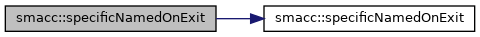
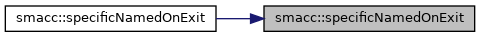
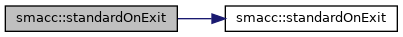
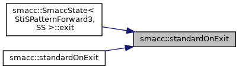

Namespaces | |
| client_bases | |
| components | |
| default_events | |
| default_transition_tags | |
| event_generators | |
| introspection | |
| state_reactors | |
| utils | |
Classes | |
| struct | AddTEventType |
| class | CbSubscriptionCallbackBase |
| class | ClientHandler |
| struct | ComponentKey |
| struct | EvCbFailure |
| struct | EvCbFinished |
| struct | EvCbSuccess |
| class | HasSpecificNamedOnExit |
| class | HasStandardOnExit |
| class | ISmaccClient |
| class | ISmaccClientBehavior |
| class | ISmaccComponent |
| class | ISmaccOrthogonal |
| class | ISmaccState |
| class | ISmaccStateMachine |
| class | ISmaccUpdatable |
| class | Orthogonal |
| class | SignalDetector |
| class | SmaccAsyncClientBehavior |
| class | SmaccClientBehavior |
| class | SmaccEventGenerator |
| class | SmaccSignal |
| class | SmaccState |
| struct | SmaccStateMachineBase |
| State Machine. More... | |
| class | StateReactor |
| class | Transition |
Functions | |
| template<typename StateMachineType > | |
| void | run () |
| template<typename TState , typename TTransitionTagName > | |
| void | specificNamedOnExit (TState &st, TTransitionTagName tn, std::true_type) |
| template<typename TState , typename TTransitionTagName > | |
| void | specificNamedOnExit (TState &, TTransitionTagName tn, std::false_type) |
| template<typename TState , typename TTransitionTagName > | |
| void | specificNamedOnExit (TState &m, TTransitionTagName tn) |
| template<typename TState > | |
| void | standardOnExit (TState &st, std::true_type) |
| template<typename TState > | |
| void | standardOnExit (TState &, std::false_type) |
| template<typename TState > | |
| void | standardOnExit (TState &m) |
Enumeration Type Documentation
◆ EventLifeTime
|
strong |
◆ SMRunMode
|
strong |
◆ StateMachineInternalAction
|
strong |
| Enumerator | |
|---|---|
| STATE_CONFIGURING | |
| STATE_ENTERING | |
| STATE_STEADY | |
| STATE_EXITING | |
| TRANSITIONING | |
Definition at line 41 of file smacc_state_machine.h.
Function Documentation
◆ run()
template<typename StateMachineType >
| void smacc::run | ( | ) |
Definition at line 84 of file smacc_signal_detector.h.
Referenced by simple_grasping::extractShape().
Here is the caller graph for this function:

◆ specificNamedOnExit() [1/3]
template<typename TState , typename TTransitionTagName >
| void smacc::specificNamedOnExit | ( | TState & | , |
| TTransitionTagName | tn, | ||
| std::false_type | |||
| ) |
Definition at line 30 of file state_traits.h.
◆ specificNamedOnExit() [2/3]
template<typename TState , typename TTransitionTagName >
| void smacc::specificNamedOnExit | ( | TState & | m, |
| TTransitionTagName | tn | ||
| ) |
Definition at line 35 of file state_traits.h.
References specificNamedOnExit().
Here is the call graph for this function:

◆ specificNamedOnExit() [3/3]
template<typename TState , typename TTransitionTagName >
| void smacc::specificNamedOnExit | ( | TState & | st, |
| TTransitionTagName | tn, | ||
| std::true_type | |||
| ) |
Definition at line 24 of file state_traits.h.
Referenced by specificNamedOnExit().
Here is the caller graph for this function:

◆ standardOnExit() [1/3]
template<typename TState >
| void smacc::standardOnExit | ( | TState & | , |
| std::false_type | |||
| ) |
Definition at line 68 of file state_traits.h.
◆ standardOnExit() [2/3]
template<typename TState >
| void smacc::standardOnExit | ( | TState & | m | ) |
Definition at line 73 of file state_traits.h.
References standardOnExit().
Here is the call graph for this function:

◆ standardOnExit() [3/3]
template<typename TState >
| void smacc::standardOnExit | ( | TState & | st, |
| std::true_type | |||
| ) |
Definition at line 62 of file state_traits.h.
Referenced by smacc::SmaccState< StiSPatternForward3, SS >::exit(), and standardOnExit().
Here is the caller graph for this function:
